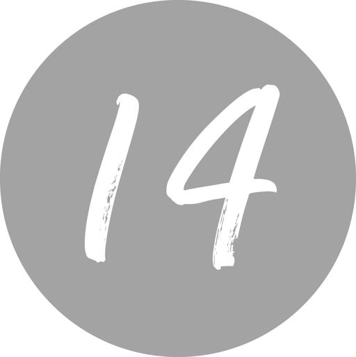

The Other Side of the Period
In life, you will lose. You will make mistakes, and you will make wrong decisions. You will suffer pain and loss. There may be some who judge you a failure, or, worse yet, you may fail by your own standards from time to time. How you respond in the aftermath of your decisions is critical to how you move toward your closing argument. Keep venturing, keep trying, and make sure you are controlling fear and fear is not controlling you.
Final Chapter
So here we are in the final chapter of a book talking about the final chapter of life. I will repeat the caveats here. I am not an expert at making decisions or weighing and balancing competing factors. And even if I were an expert, that fact would do you little good as you navigate the circumstances of your own life.
My motivation to write this book actually began with a poorly made decision to go to the store with my wife and ended with the most cathartic exercise I could have possibly engaged in: honestly evaluating decisions made throughout life, along with their inherent motives, costs, benefits, and consequences. In essence, through the course of this book, I did what I am imploring you to do: Take charge of writing your closing argument.
I knew better than to go to the grocery store with Terri. I had made that terrible decision a thousand times before and swore each time never to make it again. She makes every mistake you can possibly make at the grocery store. She makes eye contact with others, which encourages them to speak. She sounds interested in their stories and reacts with excitement to long tales about children and grandchildren, which encourages them to speak longer. She refuses to squeeze through narrow openings in between other shoppers’ carts and mumbles about patience or waiting your turn or something else like that. So we do not shop together.
When we did go to the grocery store together, we reached a compromise. She could ride with me, stay in the truck while I went inside, and text me continuously as she “remembered” things we needed but had forgotten to write down. And she could decipher what she had written on her grocery list in the likely event that there was no expert in hieroglyphics at the store that day. Her handwriting is beautiful—it’s just illegible.
It was a normal spring day in early 2021—well, as normal as life could be during a pandemic. Off we went. I was checking out and pushing my shopping cart toward the sliding glass door when an older woman approached me and said: “I know who you are, even with your mask on. You are the district attorney.”
“Yes, ma’am, I used to be, but I am not anymore.”
“When did you leave?”
I didn’t want to embarrass her so I said, “Oh, just a little while ago.” In fact, it had been over a decade.
“You did a good job. We thought you were fair.”
I thanked her, bid her farewell, and walked out the sliding doors into the parking lot toward my truck.
But she was not through. She followed me and asked, “So what did you do after you left the courthouse?”
This one is hard. Politics is so divisive, and I did not want to have a conversation about Washington or party lines, so I just said, “I did a little stint in another branch of government, but I’m happy to be home now. I teach a class at a local college and practice a little bit of law.”
“You didn’t want to be a judge?” she asked. She was very astute. Almost all lawyers want to be judges, don’t they? Especially me, who had an almost lifelong infatuation with the federal bench.
“Yes, ma’am, I thought I did, but now I just teach a class at a school and a couple of other little things.”
We kept talking in the parking lot, and she ended by saying, “Well, I am sure you will find something else to run for, won’t you?”
“No, ma’am, I’m done with all of that. I’m going to stay right here in Spartanburg with you.”
When I returned to the truck my wife asked, “Who were you talking to?”
“I have no idea, honey. I’ve never seen her before in my life, and I didn’t catch her name.”
“What did she want?”
“Nothing, just to talk. She thought I was still the prosecutor, but she also said she thought I was fair, which is nice.”
I realized in that grocery store parking lot that my decisions in life were not rooted in ambition, not anymore. They were rooted in a desire to have something more meaningful than that. Here I was, sitting in a truck with the person I love more than anyone in life, in the town I love more than any other town, and a woman I’ve never met, who at first glance one might conclude did not have much in common with me, just said I was fair. Maybe those decisions made and not made were not so bad after all.
There are natural punctuation marks at various stages of life. The end of high school marks the end of adolescence. (An exclamation point.) The end of college marks the beginning of adulthood. (A question mark.) There is for some of us the parenting period of life, and it overlaps with the vocational period of life. (A question mark followed by an exclamation point.) There is the death of a parent, when we begin to reflect more on our own mortality. (Ellipses.) Children leave and grandchildren arrive. (A semicolon.) Each of those is an appropriate marker to reflect the trajectory of our lives. Depending upon your own life experiences, those life passages may include commas or semicolons, exclamation points, question marks, or even dashes, but not periods.
There is but one period.
And we do not get to see what is written or said on the other side of that period. Yet it is what will last, so we would be wise to influence it as much as we possibly can. We should punctuate our life so that when that final period is placed, it finishes a complete sentence preceded by a powerful paragraph.
I have lived in fear and then forced that fear to remodel itself into something more healthy, called caution. I then watched as caution improved both my decision making and my life, whereas fear had been the unjust warden of both. I have confused titles with jobs, dreams with reality, and success with significance, and emerged to live on the other side with greater clarity and mostly invisible scars.
I have taken jobs I should have skipped and left jobs I should have kept, and found that it all worked out okay in the end regardless. I have made the right decision for the wrong reasons, the wrong decision for the right reasons, and more often than not have had a really tough time telling the two apart. I have lost by winning and I have won by losing and learned the most valuable lesson of all, which is: Who gets to define those terms in my own life? Only me.
All of which brings me to the heart and mind of the matter: What will you be remembered for, and what role do you want to play in that?
As you present your closing argument to the world through your life decisions, don’t confuse wanting to leave a legacy with caring about what other people think of you. Worrying about others’ perceptions of you and your decisions will only confuse your inner compass. A legacy is not purely for others to see the work that you did and praise you or criticize you; a legacy is a life built around a purpose that betters the world around you. People’s feedback can spur you on, encourage you, verify you’re on the right track, or help you adjust your direction, but, ultimately, if you know yourself and have a deep sense of purpose in the decisions you make, then the verdict of your closing argument will be crystal clear.
Advice for My Younger Self
Have you ever seen those celebrity interviews where the interviewer asks, “If you could go back in time and have a talk with your younger self, what would you say?” My initial response to such questions is, “My advice to my younger self would be to skip this interview when it is offered so I don’t have to answer stupid questions about talking to my younger self!”
But, in some ways, it is the perfect question for us to ask ourselves at life’s markers. It helps us sort out perceived failures and the difference between regrets and remembrances. It is a great measure of whether our mistakes defined us, propelled us, or thwarted us. It reminds us that equally important when making decisions is how we think about the aftermath of those decisions.
This is oversimplistic, but I suspect about half the world is motivated by a desire for success and half the world is motivated by a fear of failure. Understanding which camp you are in can be liberating and instructive. I am afraid of failing. I have identified that as my source of motivation—a fear of failing. So fear has played a role in my decision making for as long as I can recall. Perhaps you live with fear too. Let it ride. Let it whisper. Do not let it drive or yell. If you have spent a lifetime being motivated by a fear of failure, nothing I can tell you or write to you will change that. But I would encourage you to do what I have done, which is reach a peace of sorts with fear. Let it look, let it edit, but do not let it write the closing chapter of your life.
As you now know, I almost dropped out of my first—and what would have been my last—political race simply because I did not want to be a failure on a massive scale in my small hometown. In sum, I did not care if the world thought I had ever won, I just did not want the world to think I was a loser or had failed.
Another example of this fear played out in what should have been my first political race but wasn’t. When I was leaving the ninth grade and heading to high school, my mom came into my room, sat on the side of the bed, and said, “I don’t ask you to do very much, do I?”
“No, ma’am,” I lied. (Asking me to be nice to my three sisters for an entire day was a lot to ask.)
“Well, I am going to ask you to do something, and I want you to do it, for me. I want you to run for student council this year at Spartan High.”
Spartanburg High School was a big school in 1980. There were hundreds of students in my grade alone. I was not a great athlete. I was not a scholar. I did not consider myself part of the popular crowd (more like one or two tiers below the group that was considered “popular”). Therefore, I was not likely to be elected to student council.
It’s one thing merely to know in the quietness of your soul that you cannot do something. In that case, you can present the façade to other people that it might be possible, but you are simply not interested enough to venture into it. Feigned apathy is powerful camouflage.
It is completely different to both know you would be unsuccessful and have that knowledge publicly validated by the election results. What I knew was that I was not going to run for student council, not that year, not any year, and certainly not at that high school.
It wasn’t simply a fear of failing. Of course, I had failed before (trigonometry and biology leap to mind), but those were private failures. What my mom was asking me to do would have been a public failure. And consequently, I decided to avoid failure by not running, by not taking any risks—except the risk of disappointing my mother.
I gave my mom all the reasons I could not run. I told her it would “interfere with work after school,” and “student council members had to get there too early in the mornings, and I had a paper route.” She was persistent. She offered to come up with a catchy slogan or help me create campaign posters. She offered to, in essence, be my first campaign manager. I could tell in her eyes and in her voice—and mostly in her disappointment—that she really wanted me to do this. I do not know why it was so important to her, but it was. I think in some ways she would have been prouder of my being on student council than being in Congress!
The look on my mother’s face is still etched in my mind. It is my original memory of hurting my mom’s heart, though I’m sure it wasn’t the first time. Being kicked out of a kindergarten class for jerking a book out of my teacher’s hands probably hurt her too. But that moment, as she perched on the edge of my bed and asked me to run, is the first time I recall knowingly disappointing my mom. I can still feel the weight of her sadness. My fear of failure overrode doing what the person who meant the most to me in life wanted me to do.
The decision to forgo politics at Spartan High was more than forty years ago. The kid who would rather disappoint his mom than risk perceived embarrassment in front of some teenagers grew up. And along the way, I have made thousands of decisions, including decisions to run for offices arguably higher than student council at a local high school (although my mom and perhaps you would disagree with that hierarchy).
How do you go from being terrified at the prospect of not having your name called out on the intercom during announcements the morning after school elections to running for office against two incumbents in a primary? The fear of failing at a small level at a single high school pales in comparison to the fears associated with running for countywide or federal office. And yet I ran for the latter and avoided the former.
The behavior change comes when you change how you define success and failure and separate it from your identity. I still fear public failure. I just have redefined what failure is, and I’ve changed who gets to decide whether I failed or not. I separated failing from losing. I separated episodic failures from general, wholesale failure. If we desire to make good decisions, then just as important as how we define success is how we define failure.
The advice I would give to my younger self who was avoiding failure by refusing to run for student council would be: Redefine success and don’t let failure be determined by what others perceive. Failure now is making decisions grounded in fear. Success is venturing, competing, trying, answering the bell even if the scoreboard isn’t what you want when the final whistle blows. There is no shame in starting a new business and misjudging the market. There is no shame in starting at one college and finishing at another. We must find a way to shift our identity from what we have succeeded at in the world’s eyes to what we have ventured to do.
The definition of success must come from you, and likewise, you and you alone can define what failure is. For me, today, failure is living an inconsequential life. Failure is never venturing, never trying, and never risking anything. Failure is leaving no mark anywhere or, worse yet, leaving a legacy of pain meted out to others. Failure is having no code by which you lived your life.
One of my favorite stories in the Bible is perhaps no one else’s favorite story in the Bible. It is the story of an insurrectionist named Barabbas. He is mentioned in all four of the Gospels after Jesus is arrested. Pontius Pilate, the governor of the Roman province of Judea and the official who presided over Jesus’s trial, did not believe Jesus was guilty of anything except perhaps unsettling the religious leaders of His time. Pontius Pilate didn’t want Jesus’s blood on his hands or a revolution from the people in the crowd, so he gave the decision to the people: They could free Barabbas, a person referred to as a “notorious prisoner” and a “killer,” or they could free Jesus, a teacher and performer of miracles. Pretty clear-cut political race: Pick a murderer or the man who said He was the Son of God. Except the crowd picked Barabbas. Jesus lost a voice vote. He lost a popular election, if you will, to a notorious killer, and he was executed, never reaching forty years of age. And yet, there is no name more revered in history than that of Jesus. Even aside from one’s spiritual beliefs, no name left its mark on the world more than the name Jesus.
Dietrich Bonhoeffer also never lived to see his fortieth birthday. He was hanged by the Germans toward the end of World War II. His crime? He fought against the systematic extermination of a people. If you are looking for a motto to guide your life, a code by which you can judge the significance of existence, perhaps it would be what Bonhoeffer said: “This is the end—for me, the beginning of life.” The end for him was hanging from a rope surrounded by Nazis with the Allies closing in on liberating a continent. Bonhoeffer “lost” before that liberation came. Except he didn’t lose at all. We are still motivated by his courage and teachings.
Martin Luther King, Jr., started a nonviolent movement for equality, was imprisoned, and also did not make it out of his thirties before he was assassinated. He is one of the most revered historical figures of all time. He died on the balcony of a hotel before he could see the fruits of his sacrifice and labor.
Three men, none of whom made it to their fortieth birthday, all changed the course of history. Success by any reasonable definition. They died by acts of violence. They died young. But history will record them so long as there is history.
Failure cannot simply be losing. It cannot be suffering. It cannot be leaving. It cannot be subordinating yourself to a higher good and eschewing the trappings of a “successful” life. Failure is not the short end of a vote tally. It is not going to prison. It is not going to the gallows. Failure is sitting still and doing nothing while opportunities to make some difference abound. It is tying failure to your identity and remaining immobile from indecision because of that.
Steven Pressfield is one of my favorite authors for many reasons. He wrote a book called The Virtues of War, wherein he tells the story of Alexander the Great coming into contact with someone who did not see fit to include “the Great” as part of his name.
Alexander the Great sought to cross a small footbridge; he was going in one direction and a wise man was coming from the other direction. There was not enough room for both; one would have to relent and go back. One of Alexander the Great’s men said, in essence, “Make way. Do you not know who is coming? It is the most powerful man in the world, for he has conquered the world.” To which the wise man responded, “Then I must be the most powerful man in the world because I have conquered the need to conquer the world.”[*] Let that sink in for a moment. “I have conquered the need to conquer the world.” He redefined success. He redefined what it meant to lead a significant life. He redefined power and relevance, with just a simple rejoinder.
Truth be told, it is likely no one reading this book—and certainly not the person writing it—will be remembered for the duration or depth of Jesus, Pastor Bonhoeffer, Dr. King, or Alexander the Great. We will not conquer the world. I suggest we settle for conquering our own definition of success, and to do that, we must also conquer our own definition of failure.
Every one of us has “failed” and will again, in that we will be on the short end of a score or a business deal or a card game. We will decide to leave of our own volition, and we will be pushed out. We will start something and not reach all our goals. We will stay somewhere too long and pay the consequences. But if we are being true to ourselves and our values, then none of those are considered failures, because we ventured. We tried. We competed.
When the Time Comes
I hope your closing argument is a long way off, I hope you make hundreds of thousands of decisions between now and then, and I hope you can go into each decision with a little more confidence now. There are a thousand ways to get to your final scene—your best closing argument—and the route you choose through your decisions to start, stay, or leave will dictate what kind of shape you are in when you get there. But eventually, you will get there.
For me, I hope people will remember that I tried to be fair. I tried to be an effective advocate for those who could not stick up for themselves. I see a final picture with John Ratcliffe talking to Ben Gramling about something funny I may have said during a round of golf. I see a final picture with my family and closest friends gathered around. I hear someone say, as the woman in the parking lot did, “He was fair.” Funny and fair. That’s all I need to see or hear to believe I have made the right decisions for my life.
What do you see?
Who do you hear?
Can you set that destination in your own life and make calculated decisions to get you there?
I cannot answer any of those questions for you, nor can I set the right expectations for your life. You have to know yourself well enough to say yes, no, maybe, or not now to the opportunities presented to you in life.
I have never passed Alexander the Great on a footbridge. I have passed the younger version of myself. The old Trey said, “It will all be okay if you have a plan and a purpose, and you start with the end in sight.”
The young Trey said: “What took you so long to figure that out?”
* Steven Pressfield, The Virtues of War: A Novel of Alexander the Great (New York: Bantam Books, 2005), 312.